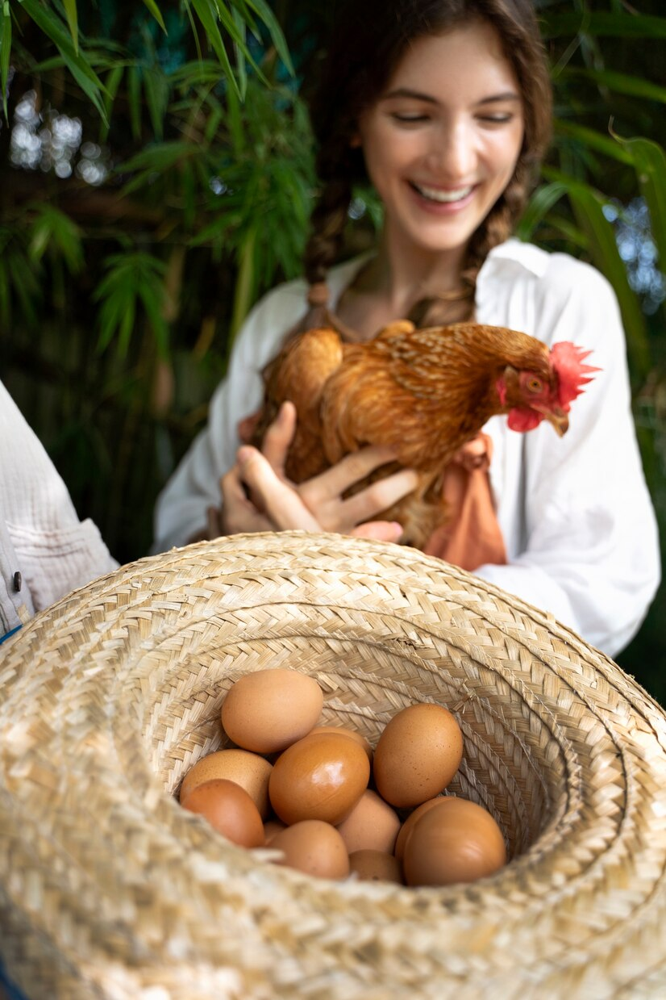

Optimizing Egg Production
Egg production is one of the primary goals of many chicken farmers. To maximize egg production, it’s important to provide optimal conditions for your chickens. Here are a few tips:
- Lighting: Chickens need around 14-16 hours of light per day to maintain peak egg production. Consider using artificial lighting in winter when daylight is shorter.
- Nutrition: A balanced diet rich in protein and calcium is crucial for egg production. Layer feed should be supplemented with oyster shell or calcium to ensure strong eggshells.
- Comfortable Living Conditions: Make sure your chickens are comfortable. Overcrowding, stress, and poor living conditions can reduce egg production. Ensure there is enough space for each chicken to roam and nest.
- Age of Hens: Hens between 6 months and 2 years old are the most productive. After two years, their egg-laying rate begins to decline. Rotate older hens out of your flock to maintain high production rates.
By maintaining the right environment, nutrition, and care, you can increase your flock’s egg-laying capabilities and ensure a steady supply of eggs.